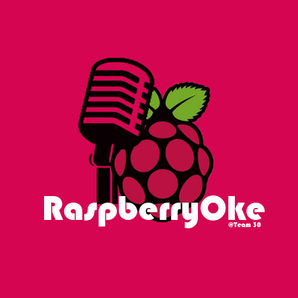

|  |
RaspberryOke
30
RaspberryOke will use external speakers plugged into the Raspberry Pi to play preloaded music to a user. Using a graphical user interface, the lyrics of that song will be printed on the external display attached to the Raspberry Pi while the song is being played. The lyrics will be highlighted in time with the song, indicating to the user when they should be singing. While the music is being played and the user is singing, the Raspberry Pi’s breadboard will put on a little light show by using attached LED lights, changing the colours with the tempo of the song.
|
1.8.16